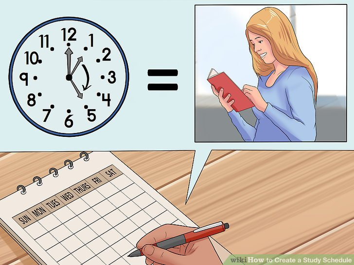

Your time inventory
Complete this inventory to work out where your time goes. Be as honest as possible to find out how many hours per week you have for study.
plan a weekly timetable
Use this weekly planner to schedule your activities. It will need to be revised at regular intervals to adjust for changes such as different work hours and family commitments.The five or six weeks before and during exams may particularly require adjustment.

Create a semester plan
Use this semester planner to mark in minor and major assignment due dates and/or exams. Refer to your Unit Information guides. Don’t forget about other important commitments. These could be family and work events or even a major sporting or cultural event you are interested in.